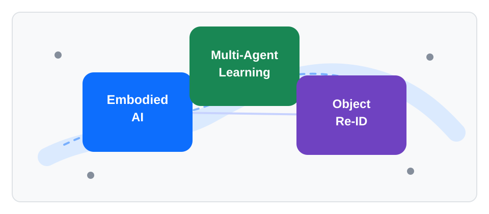

北京交通大学计算机学院
副教授，主要研究方向包括具身智能操控、多智能体集群协同、目标重识别。

面向有志于视觉、强化学习、具身智能、多智能体系统的同学。
与官方主页方向保持一致，便于学生和合作者快速浏览。
后续可扩展为方向介绍、项目展示、代码资源与数据集入口。
后续可发布项目方向、报名要求、组会安排与阶段成果。
邮箱： lvkai@bjtu.edu.cn
官方主页： faculty.bjtu.edu.cn/10107